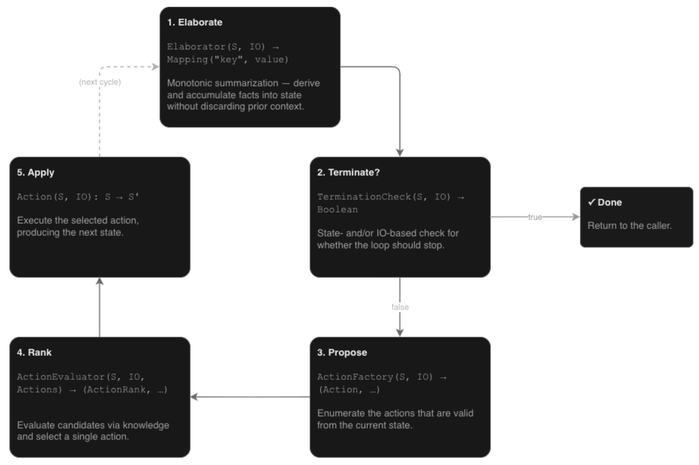

Knowledge-Augmented Decision Process (KADP)¶
Agentic AI Equivalent: Orchestration (see GitHub’s guide on AI Orchestration). In agentic systems, an orchestration engine manages sequential decision-making.
What is a decision process?¶
A decision process is a declarative, state-driven execution machine that continually matches a state against a collection of independent operators to determine the next step.
Key characteristics include:
Iterative Execution: Instead of executing code along a fixed, linear path, a decision process runs an iterative loop on every system tick.
Declarative Control: Rather than hardcoding an explicit, rigid sequence of steps in a workflow, developers define decision criteria declaratively.
State Mutation: They continually evaluate agent state to determine the next steps of reasoning or action. Each chosen action mutates the state, leading directly to the next decision.
Hierarchical Structure: Decision processes can be organized hierarchically to manage complex system architectures.
cognition uses DecisionProcess to continuously evaluate declarative decision criteria against a live state, dynamically computing, executing, and adjusting workflows in real-time. This conceptualization is similar in spirit to a combination of event-driven and data-driven programming paradigms, but they are purpose-built for agentic systems.
What are the scientific principles?¶
A knowledge-Augmented DecisionProcess (KADP) shares identical concepts of states and actions with MDPs but replaces data-driven, trial-and-error reinforcement learning with explicitly programmed expert domain knowledge. Rather than relying on environment simulators, reward functions, discount factors, or probabilistic state transitions, KADP uses deterministic programmatic operators, preconditions, and termination checks. This design bypasses the cold-start problem of reinforcement learning, enabling predictable, auditable, and expert-driven decision-making from the very first step.
Why use a decision process?¶
Using a decision process for orchestration provides an ideal middle ground between deterministic code and non-deterministic AI generation. It fundamentally balances the need for flexible process execution with the controllability of the process.
Context-Aware Flexibility: It behaves with the flexibility of an LLM-driven orchestration, using a live state to dynamically figure out what to do next.
Guaranteed Execution: Unlike LLMs (which can deviate from instructions), a decision process is written programmatically, guaranteeing exactly what steps and operators are executed in a given situation.
Implementation Details¶
The (Knowledge Augmented) Decision Process, or (KA)DP, operates on a continuous cycle of evaluating state and executing actions:

Core Components¶
state: Defines the mutable data needed to represent process progress. Upon initialization of the DP, you provide a function to supply its initial state.IOContainer: Provides the process with access to non-state data and channels.input(i): Read-only structured data (typically from external sensors).output(o): Channels for execution (typically a function used to interact with external actuators).elab(e): Key/computed value pairs (typically combining aspects of state + input + arguments).args(a): Read-only key/value pairs used to parameterize an execution of the process.
Tip
The string value (e.g., str(my_dp) of a DP reveals highly useful information about this structure.
The DP Cycle (Phases)¶
The DP continually executes a cycle consisting of the following phases:
Elaboration(viaElaborator): Computes value(s) based upon the current state and IO.Termination(viaTerminationCheck): Detects state-based ending conditions.Propose(viaActionFactory): Indicates validAction(s) that can be taken.Rank(viaActionEvaluator, producingActionRank): Uses knowledge to evaluate and score candidate actions.Apply(commonly via operators): Executes the single selected action, typically to modify state and/or externally actuate.
Note
A DP can run individual phases/cycles, but commonly runs until a termination condition is detected.
Once terminated, a DP must be reinitialized before future runs, which restarts the cycle and resets the DP state to an initial value.
Tip
It is not uncommon for the state initialization function to return a reference to a (mutable) object…
my_state = CustomStateClass()
my_dp = DecisionProcess(lambda: my_state)
The effect of this pattern is that DP state persists across DP reinit.
Typical DP Usage (e.g., Isolated Testing)¶
Design DP state: (e.g., author a custom state class).
Instantiate a DP: Supply it with a function that outputs an initial state value.
Add components: (e.g., attach operators, termination checks, etc., to the DP).
Run: (e.g., via
my_dp()).Access state & Repeat: Access the DP state, potentially run
reinit-> re-run.